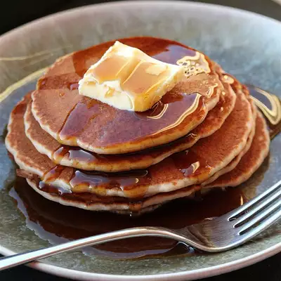

Odin Recipes
Description

Pancakes just taste better when they're made from scratch, and
these better-for-you whole-grain pancake recipes made with buckwheat are no exception!
Ingredients
- ½ cup whole wheat flour
- ½ cup whole wheat flour
- ½ cup whole wheat flour
- ½ cup whole wheat flour
- ½ cup whole wheat flour
Steps
- 3 tablespoons safflower oil
- 2 tablespoons honey
- 1 egg, lightly beaten